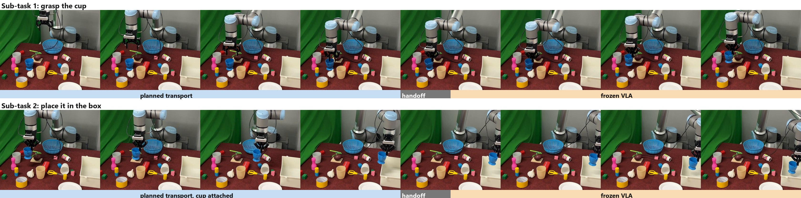
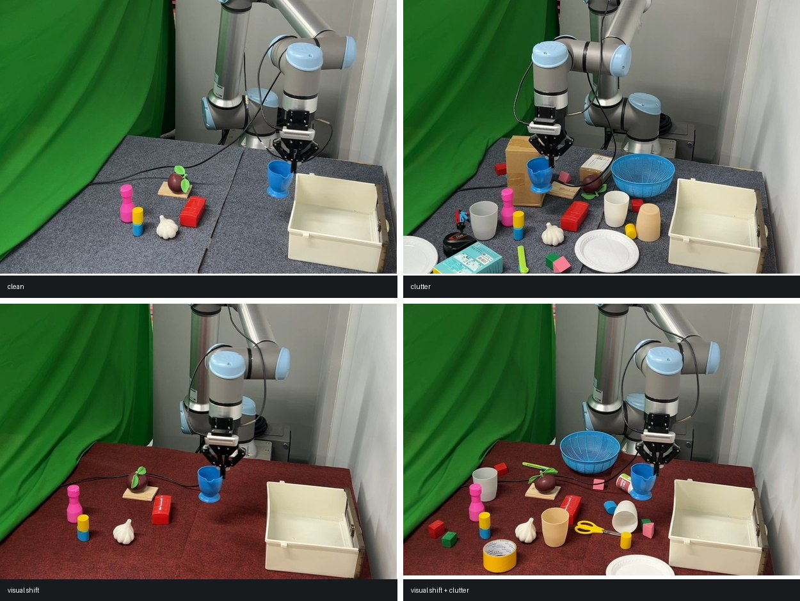
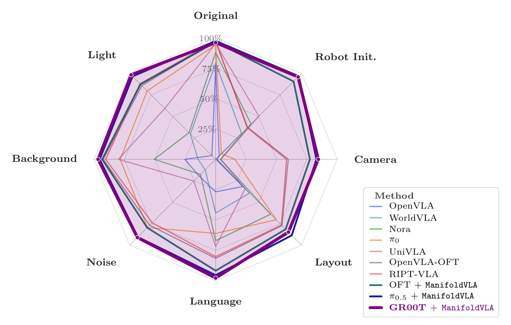
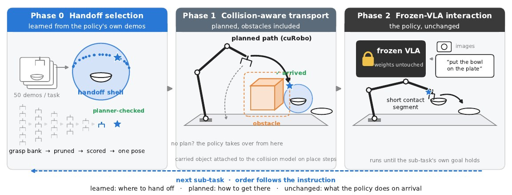
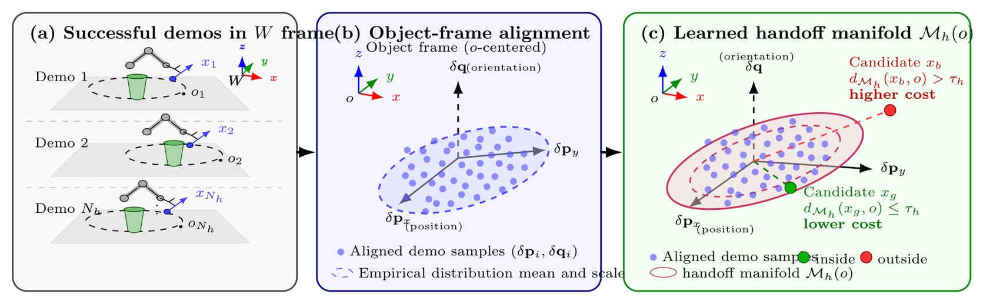
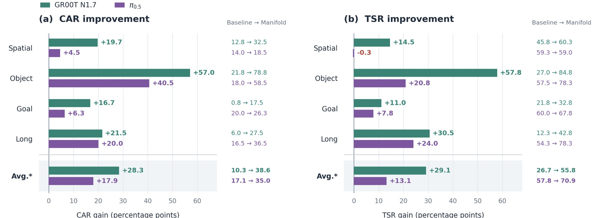
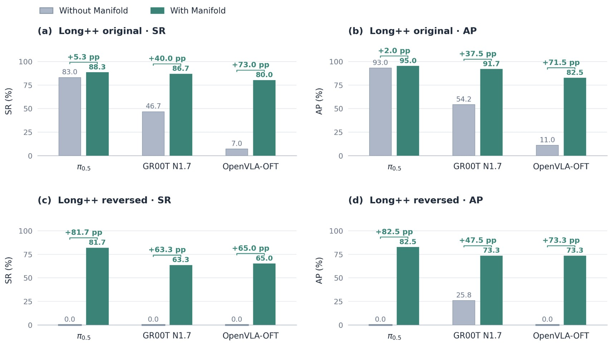
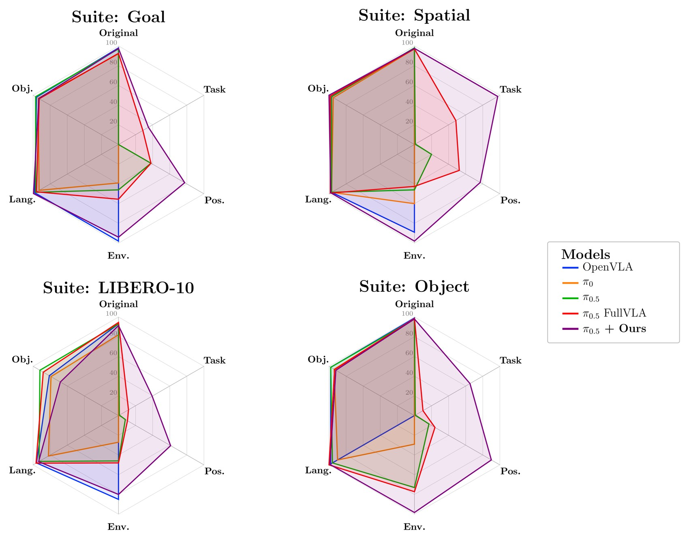

Anonymous submission · under review
ManifoldVLA: Planning Where to Begin via Learned Handoff Manifolds
A geometric planner carries the arm to a handoff pose fitted from demonstrations; a frozen VLA does the contact. Nothing is retrained.
One rollout, coloured by who is in control
Every contact in this episode happens in orange. The planner carries the arm to a pose and stops; the frozen policy grasps; the planner carries the object, now part of the collision model, to the box; the policy places. This is the hardest of the four conditions — the worktop is replaced and distractors are scattered around the target, the cell where the frozen policy on its own reaches 40.0. The strip under the clip is the same episode laid out frame by frame.

Abstract
Vision-language-action (VLA) policies show strong promise for robot manipulation, but end-to-end training is data-hungry and often brittle when the robot must move from a global reset state into narrow contact-rich regions. We propose ManifoldVLA, a plug-and-play transport layer that bridges an object-level phase for global transport and an action-level phase for short-horizon interaction. A geometric planner first moves the robot to a task-aware handoff pose near the target object, and an unmodified VLA policy then executes the local skill. This design reduces the burden of the required demonstrations for a robust learned policy and improves robustness in changing scenes through object-centric reasoning. To effectively select a grasp-conditioned approach pose, we propose a manifold-guided handoff selector that ranks candidates by grasp-approach manifold structure and geometric cost, and filters them based on IK feasibility and collision checks, using only a few reference demonstrations from the training data. The layer matches clean-LIBERO performance while improving robustness across perturbation, obstacle, and long-horizon settings.
Real-robot results
A physical UR10 arm, perception from a depth pipeline instead of simulator state. Two perturbations are crossed: the worktop covering is replaced (only pixels change) and distractor objects are scattered around the target (geometry changes). The gap widens exactly where the scene is hardest: on the clean tabletop the layer is worth 15 points (75.0 to 90.0), and under both perturbations at once it doubles the success rate outright (40.0 to 80.0).

| Arm | Clean | Clutter | Visual shift | Both | All | Time (s) |
|---|---|---|---|---|---|---|
| n=20 | n=10 | n=10 | n=10 | n=50 | ||
| FullVLA | 15 (75.0) | 8 (80.0) | 5 (50.0) | 4 (40.0) | 32 (64.0) | 49 |
| + ManifoldVLA | 18 (90.0) | 9 (90.0) | 8 (80.0) | 8 (80.0) | 43 (86.0) | 21.3 |
Successes and rate (%) over the 2×2 conditions. 50 episodes per arm in total.
More rollouts
Both perturbations — policy alone scores 40.0 here
Worktop replaced — policy alone 50.0
Worktop replaced — policy alone 50.0
Clean tabletop — policy alone 75.0
Distractors added — policy alone 80.0
Hardest condition first, by the rate the frozen policy alone reaches in that cell. All videos play at 2×.
What the layer does

A VLA trained end-to-end has to solve two very different problems at once: cross the workspace, and then make contact. The crossing is where perturbations bite — move the camera, relight the scene, or shift the layout and the policy is navigating from an unfamiliar state long before it ever touches anything. ManifoldVLA hands that part to a planner and gives the policy back the one thing it is reliably good at.
Method

The handoff manifold is fitted, not hand-tuned. From the same demonstrations the policy was trained on, we take the poses at which successful rollouts began their contact phase, and model them as a region in relative position and orientation around the object. At test time the planner samples grasp-conditioned candidates, scores them by distance to that manifold plus travel, alignment and rotation costs, and keeps the best one that survives IK and collision checks.

The layer is free on clean benchmarks
The point of the clean suites is that nothing should happen here. There is no perturbation to be robust to, so a transport layer can only break things. It does not: against the same backbone run in our own harness the average is 95.4 against 95.9. Individual suites move both ways — Spatial down two points, LIBERO-10 up four.
| Method | Spatial | Object | Goal | 10 | Avg. |
|---|---|---|---|---|---|
| OpenVLA | 84.7 | 88.4 | 79.2 | 53.7 | 76.5 |
| π0 | 96.8 | 98.8 | 95.8 | 85.2 | 94.2 |
| OpenVLA-OFT | 97.6 | 98.4 | 97.9 | 94.5 | 97.1 |
| π0.5 | 98.8 | 98.2 | 98.0 | 92.4 | 96.9 |
| GR00T N1.7 (NVIDIA) | 97.5 | 98.5 | 97.5 | 94.5 | 97.0 |
| GR00T N1.7 FullVLA (ours) | 98.0 | 97.5 | 98.5 | 87.5 | 95.4 |
| GR00T N1.7 + ManifoldVLA (ours) | 96.0 | 98.0 | 98.0 | 91.5 | 95.9 |
Success rate (%) per suite, 200 episodes each.
Where it pays: 10,030 perturbed tasks
LIBERO-Plus perturbs one dimension at a time. Published baselines clear 95% on clean LIBERO and then collapse on at least one dimension — OpenVLA drops to 0.8% under a camera shift, UniVLA to 1.8%. Wrapping a frozen backbone in ManifoldVLA moves every dimension at once, and a ManifoldVLA variant takes all seven perturbation columns: GR00T N1.7 leads on camera, language, noise, background and light, π0.5 on robot initial state and layout. The unperturbed column is the one we do not win, which is the expected shape — clean performance is already saturated.
| Method | Orig. | Robot Init | Camera | Layout | Language | Noise | Background | Light | Total |
|---|---|---|---|---|---|---|---|---|---|
| OpenVLA | 76.5 | 3.5 | 0.8 | 28.5 | 23.0 | 15.2 | 34.8 | 8.1 | 15.6 |
| WorldVLA | 79.1 | 27.9 | 0.1 | 38.0 | 41.6 | 10.9 | 17.1 | 43.7 | 25.0 |
| Nora | 87.9 | 37.0 | 2.2 | 62.1 | 65.1 | 12.8 | 58.6 | 45.7 | 39.0 |
| π0 | 94.2 | 6.0 | 13.8 | 68.9 | 58.8 | 79.0 | 81.4 | 85.0 | 53.6 |
| UniVLA | 95.2 | 46.2 | 1.8 | 31.9 | 69.6 | 21.2 | 81.0 | 69.0 | 42.9 |
| OpenVLA-OFT | 97.1 | 31.9 | 56.4 | 74.2 | 79.5 | 75.8 | 93.3 | 88.7 | 69.6 |
| RIPT-VLA | 97.5 | 31.2 | 55.2 | 74.2 | 77.6 | 73.5 | 91.6 | 88.4 | 68.4 |
| GR00T N1.7 FullVLA (ours) | 95.4 | 60.8 | 63.6 | 72.5 | 85.8 | 83.6 | 95.0 | 93.6 | 77.9 |
| GR00T N1.7 + ManifoldVLA (ours) | 96.0 | 95.9 | 84.4 | 84.7 | 97.7 | 91.0 | 96.7 | 98.3 | 92.2 |
| (paired per task) | +35.1 | +20.8 | +12.3 | +11.9 | +7.4 | +1.8 | +4.7 | +14.3 | |
| OpenVLA-OFT + ManifoldVLA (ours) | 96.5 | 90.6 | 77.5 | 81.4 | 91.7 | 79.6 | 93.3 | 87.4 | 85.5 |
| π0.5 + ManifoldVLA (ours) | 97.4 | 96.7 | 82.9 | 88.5 | 95.4 | 90.5 | 95.4 | 96.6 | 91.9 |
Success rate (%) by perturbation dimension. Bold marks the column maximum. Published rows are the benchmark’s own numbers; Total pools all 10,030 variants rather than averaging the seven columns.
Obstacles: the transport is where collisions happen
SafeLIBERO puts an obstacle between the arm and the target. Because the planner owns the crossing, it is the component that can see and avoid the obstacle — the policy never has to. CAR is the share of episodes that avoided collision, TSR the share that finished the task.
| Spatial | Object | Goal | Long | Avg. | ||||||
|---|---|---|---|---|---|---|---|---|---|---|
| Policy | CAR | TSR | CAR | TSR | CAR | TSR | CAR | TSR | CAR | TSR |
| OpenVLA-OFT | 8.3 | 36.5 | 11.5 | 28.8 | 19.5 | 24.3 | 6.0 | 15.3 | 11.3 | 26.2 |
| π0.5 | 14.0 | 59.3 | 18.0 | 57.5 | 20.0 | 60.0 | 16.5 | 54.3 | 17.1 | 57.8 |
| π0.5 + AEGIS | 68.0 | 68.5 | 71.3 | 72.5 | 76.5 | 82.8 | 59.8 | 46.3 | 68.9 | 67.5 |
| GR00T FullVLA | 12.8 | 45.8 | 21.8 | 27.0 | 0.8 | 21.8 | 6.0 | 12.3 | 10.3 | 26.7 |
| GR00T + ManifoldVLA | 32.5 | 60.3 | 78.8 | 84.8 | 17.5 | 32.8 | 27.5 | 42.8 | 38.6 | 55.8 |
| π0.5 (ours) | 13.5 | 57.5 | 19.5 | 55.5 | 18.3 | 61.8 | 13.0 | 57.3 | 16.1 | 58.0 |
| π0.5 + ManifoldVLA | 18.5 | 59.0 | 58.5 | 78.3 | 26.3 | 67.8 | 36.5 | 78.3 | 35.0 | 70.9 |
CAR and TSR (%) per suite, both levels pooled (400 episodes each).

Long chains: the order the instruction asked for
LIBERO-Long++ chains sub-tasks and then asks for them in reverse. This is the sharpest result in the paper. Every frozen baseline scores exactly zero on the reversed order — not a low number, zero — because the policy replays the ordering baked into its demonstrations regardless of what the instruction says. The planner reads the live scene instead, so the chain becomes executable without retraining anything: 0 → 81.7 on π0.5, 0 → 63.3 on GR00T N1.7, 0 → 65.0 on OpenVLA-OFT.

| Long++ original | Long++ reversed | |||
|---|---|---|---|---|
| Method | SR | AP | SR | AP |
| Reported by the benchmark authors (their harness, 10 initial states per task) | ||||
| π0.5 | 83 | 93 | 0 | 0 |
| OpenVLA-OFT | 7 | 11 | 0 | 0 |
| LiLo-VLA (full, retrained) | 78 | 88 | 85 | 89 |
| Ours (same 10 initial states/task, paired, frozen backbones) | ||||
| GR00T N1.7 FullVLA | 46.7 | 54.2 | 0.0 | 25.8 |
| GR00T N1.7 + ManifoldVLA | 86.7 | 91.7 | 63.3 | 73.3 |
| π0.5 FullVLA | 71.7 | 80.0 | 0.0 | 30.0 |
| π0.5 + ManifoldVLA | 88.3 | 95.0 | 81.7 | 82.5 |
| OpenVLA-OFT + ManifoldVLA | 80.0 | 82.5 | 65.0 | 73.3 |
SR = success in the instructed order, AP = average progress (%).
Where it stops helping
LIBERO-PRO changes the task itself rather than the scene: the goal, the target object, the spatial relation, the environment, or a language paraphrase. The layer helps most where the planner can still read the live scene and choose a valid handoff — environment perturbations show the largest separation, and position changes are less damaging because the target is selected from the current state rather than a memorised reset trajectory. Paraphrases and appearance changes are mostly neutral. Task changes that remove the required object, or make the task geometrically impossible, stay hard for both arms — the layer improves robustness to changed geometry, it cannot invent a missing affordance.

Which part of the recipe matters
Two ablations. The first removes score terms one at a time: dropping the manifold term entirely (w = 0) drops 91.5 to 54.5, far more than any geometric term, and weighting it alone still reaches 84.5. The second crosses the transport controller against the handoff target, and separates the two contributions — a better planner alone is not enough, and a fitted target alone is not enough.
| Method | w | Travel | Align | Rotation | SR (%) |
|---|---|---|---|---|---|
| ManifoldVLA (the recipe) | 3 | ✓ | ✓ | ✓ | 91.5 |
| Weight on the manifold term changed | |||||
| manifold term removed | 0 | ✓ | ✓ | ✓ | 54.5 |
| all terms weighted equally | 1 | ✓ | ✓ | ✓ | 90.0 |
| manifold term alone | ∞ | 84.5 | |||
| One geometric term removed | |||||
| travel removed | 3 | ✓ | ✓ | 89.5 | |
| alignment removed | 3 | ✓ | ✓ | 84.5 | |
| rotation removed | 3 | ✓ | ✓ | 88.5 | |
Effect of score terms on LIBERO-10 success. w weights the manifold term.
| Transport | Target | ||||
|---|---|---|---|---|---|
| Arm | OSC | cuRobo | Offs. | Man. | SR (%) |
| 1. OSC + offset§ | ✓ | ✓ | 87 | ||
| 2. OSC + manifold | ✓ | ✓ | 91 | ||
| 3. cuRobo + offset§ | ✓ | ✓ | 79 | ||
| 4. cuRobo + man. (ManifoldVLA) | ✓ | ✓ | 98 | ||
Transport × handoff target on clean LIBERO-Object. § marks a separate code tree.
BibTeX
@inproceedings{manifoldvla2027,
title = {ManifoldVLA: Planning Where to Begin via Learned Handoff Manifolds},
author = {Anonymous},
booktitle = {Under review},
year = {2027}
}